| Cumulative threshold | Cloglog threshold | Description | Fractional predicted area | Training omission rate |
|---|---|---|---|---|
| 1.000 | 0.143 | Fixed cumulative value 1 | 0.805 | 0.005 |
| 5.000 | 0.273 | Fixed cumulative value 5 | 0.691 | 0.042 |
| 10.000 | 0.355 | Fixed cumulative value 10 | 0.597 | 0.073 |
| 0.149 | 0.041 | Minimum training presence | 0.867 | 0.000 |
| 13.666 | 0.415 | 10 percentile training presence | 0.543 | 0.099 |
| 35.903 | 0.609 | Equal training sensitivity and specificity | 0.332 | 0.333 |
| 19.684 | 0.493 | Maximum training sensitivity plus specificity | 0.473 | 0.154 |
| 1.637 | 0.184 | Balance training omission, predicted area and threshold value | 0.780 | 0.005 |
| 4.273 | 0.260 | Equate entropy of thresholded and original distributions | 0.707 | 0.026 |
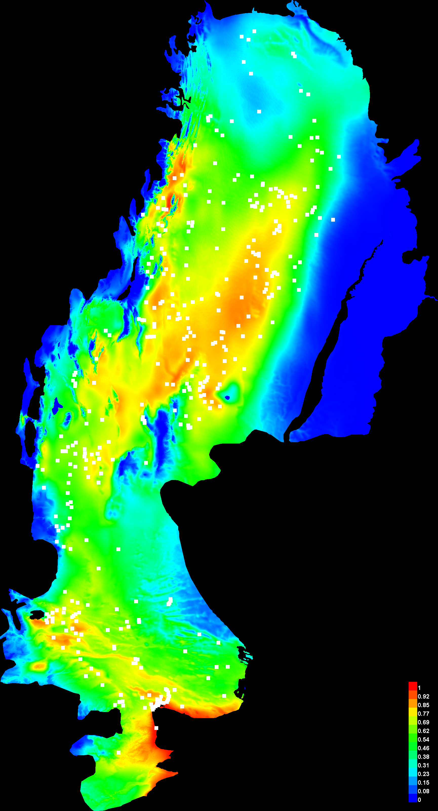
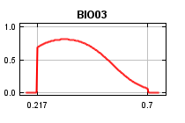
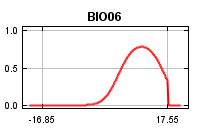
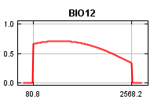
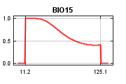
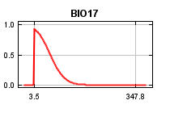
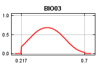
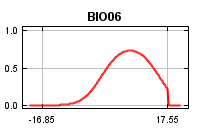
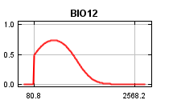
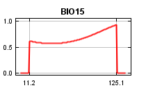
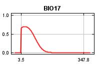
| Variable | Percent contribution | Permutation importance |
|---|---|---|
| BIO17 | 32.4 | 40.7 |
| BIO15 | 25.7 | 12.6 |
| BIO03 | 16.5 | 7.5 |
| BIO06 | 16 | 19.6 |
| BIO12 | 9.4 | 19.7 |